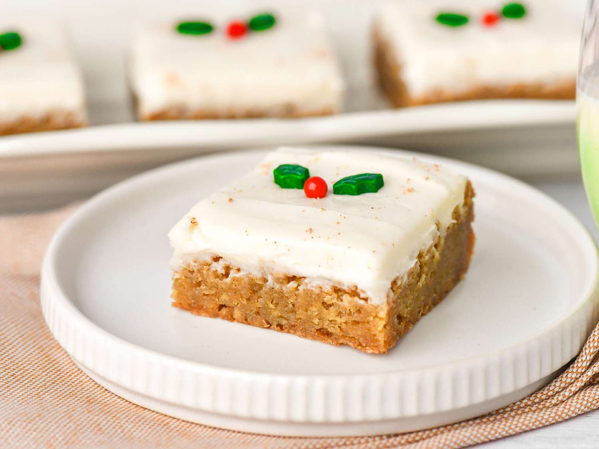

Eggnog Blondies

About the recipe
Eggnog blondies are chewy, spiced dessert bars that incorporate the classic holiday flavors of eggnog, such as nutmeg, cinnamon, and vanilla. They are a popular seasonal treat, often enhanced with a glaze or white chocolate chips.
Ingredients
- Melted butter
- White and Brown sugar
- An egg
- vanilla and optional rum extracts
- eggnog
- all-purpose baking flour
- baking soga
- salt
- nutmeg
Steps
- Preheat oven and prepare a baking pan.
- Whisk together flour, baking powder, salt, cinnamon, and nutmeg in a medium bowl.
- Combine melted butter and brown sugar in a large bowl.
- Add eggs, vanilla extract, and eggnog to the wet ingredients and whisk.
- Gradually add dry ingredients to wet ingredients and fold until combined.
- Stir in white chocolate chips or chopped nuts as an option.
- Spread batter in the prepared pan and bake for 25–30 minutes.
- Let the blondies cool in the pan on a wire rack.
- Optionally, drizzle a glaze of powdered sugar, eggnog, and nutmeg over the cooled blondies before slicing.